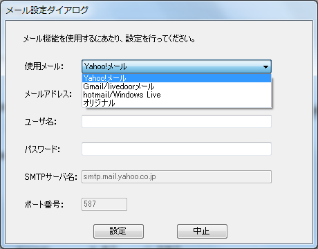
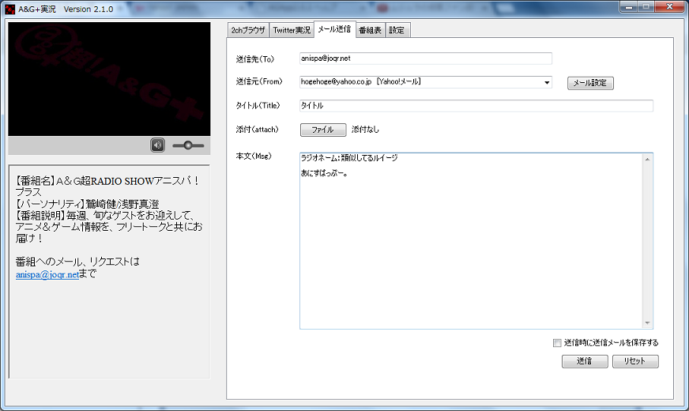

メール送信
番組へメールを手軽に送ることができます。
（2〜4は初回のみの設定でOKです）
1.画面よりメール送信タブを選択し、「メール設定ボタン」を押す
2.送信に使用するメールを選択します。（選択肢にない場合はオリジナルを選択します）

3.メールアドレスや各種設定内容を入力し、「設定ボタン」を押します。
4.設定後、各入力フォームを入力して送信します。
なお、「送信時に送信メールを保存する」にチェックを入れると、ファイルにメール内容が保存されます。

5.メール送信先（TO）は、直接入力以外に、
・放送中の番組のメールアドレスリンクをクリックする
・番組表のメールアドレスからリンクをクリックする
の方法で、入力することができます。